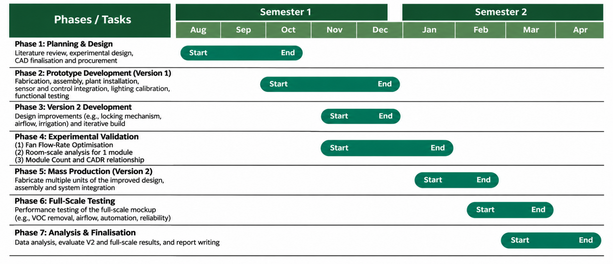

7.1 Prototyping progress
The project has progressed from concept exploration to detailed module design and initial fabrication. A flat modular configuration comprising plant, base and sensor subsystems has been selected. The plant-module design defines a 600 × 600 mm planting face, a 250 mm-deep enclosure and thirteen pot positions, with integrated airflow, irrigation and lighting provisions.
Development has included alternative interlocking mechanisms, qualitative CFD comparison of three airflow configurations and preliminary component selection. Baffle Version 2 was selected for prototype evaluation, while lighting targets and the sensor-control architecture have been defined. Sections 4–5 and Appendix 4 document these design outputs and their development.
Bearings and gears have been fabricated, while laser-cut panels remain under development. Full-module assembly and verification are outstanding. The next milestone is a functional prototype with documented fit, sealing, wet mass, airflow, irrigation and lighting performance. Treatment capacity and supported assembly configurations remain to be established experimentally.
7.2 Mapping progress to the objectives
The project addresses four objectives: flexible deployment, visibility of indoor air conditions, responsive operation and experimentally verified treatment capacity. These objectives guide the modular architecture, sensing and control functions, and validation programme. Table 9 maps current outputs to each objective and identifies the evidence needed to verify the principal design requirements.
| Objective or requirement | Current progress | Remaining verification |
|---|---|---|
| Deployment flexibility | Modular plant, base and sensor architecture defined | Assembly interfaces, stability and practical movement trials |
| Visibility of air conditions | Sensors and display concept selected | Verified readings, data logging and integrated display |
| Responsive operation | Threshold-based fan activation proposed | Communication, switching response and fault-handling tests |
| Treatment capacity | Experiments and analysis methods defined | Pollutant-specific single-pass, room-scaling and module-addition results |
| Dimensions and footprint | Enclosure dimensions defined | Complete installed and packed dimensions; assembly footprint |
| Module mass | Estimated at 17.5 kg excluding plants | Component mass accounting and complete wet-module weighing |
| Airflow and noise | Baffle selected qualitatively; fan candidate shortlisted | Installed airflow distribution and declared module/assembly noise measurements |
| Irrigation and refill interval | Shared supply and internal misting proposed | Water distribution, leakage, net consumption and reservoir sizing |
| Lighting | Module-level lighting and provisional targets defined | Leaf-position PPFD mapping and plant-condition monitoring |
Current progress establishes the proposed design and its verification approach. Achievement of the objectives will depend on demonstrating integrated operation and measured performance within the supported configurations.
7.3 Outstanding technical questions
The principal measurement uncertainty is whether removal of the selected pollutants can be resolved reliably. Pilot tests will establish source stability, instrument suitability and measurement uncertainty. If quantitative VOC assessment is unsuitable, a calibrated reference method will be sought or the validated pollutant scope narrowed explicitly.
Installed airflow through wet growing medium and interference from misting also remain uncertain. Insufficient airflow will require revision of the fan, controller or flow path. Measurement interference will require changes to sampling arrangements or irrigation timing.
Wet mass, connection strength, base stability and water consumption will determine the permitted stack height, assembly configurations and reservoir capacity. Wheels will be retained only if repositioning provides a useful treatment benefit and the connected assembly can be moved practically.
Finally, room-scaling and module-addition tests will determine whether treatment capacity can be represented by a common sizing relationship. Where performance depends strongly on room configuration or module arrangement, recommendations will be restricted to the conditions supported by the results.
7.4 Remaining work and project sequence
Table 10 summarises the remaining activities and their completion criteria, while Figure 25 presents their planned timing and overlap. A functional module and qualified measurement method are required before the main treatment experiments. Experiment 1 will establish the operating setting for Experiments 2 and 3. Base development, controls integration and additional-module fabrication can proceed in parallel, with three functional modules required before Experiment 3.
| Stage | Remaining activity | Completion gate |
|---|---|---|
| Complete prototype development | Finish a functional plant module; establish seals, services and support; calibrate irrigation and lighting. | Assembled module with documented wet mass, operating flow and stable water and lighting performance. |
| Qualify the measurement method | Define challenge pollutants; verify source stability and sensor performance; document room and HVAC conditions. | Pilot data demonstrate that the expected removal can be resolved by the measurement system. |
| Run Experiment 1 | Measure single-pass performance across fan settings. | Select an operating setting using measured CADR and operating constraints. |
| Run Experiments 2 and 3 | Evaluate continuous-source room configurations and module-count scaling. | Repeatable data and a defensible estimate of effective treatment or clearly reported local concentration outcomes. |
| Evaluate mobility and integrate subsystems | Test placement benefit; complete base, service connections, sensor display and feedback control. | Decide whether wheels remain; demonstrate integrated operation. |
| Finalise the system and guide | Incorporate test findings, validate supported configurations and complete documentation. | Final prototype and a sizing guide with measured limits and labelled projections. |
Experimental findings will inform final fan selection, supported assembly configurations and sizing recommendations. Changes to the fan or airflow path will require re-characterisation before subsequent performance comparisons.
